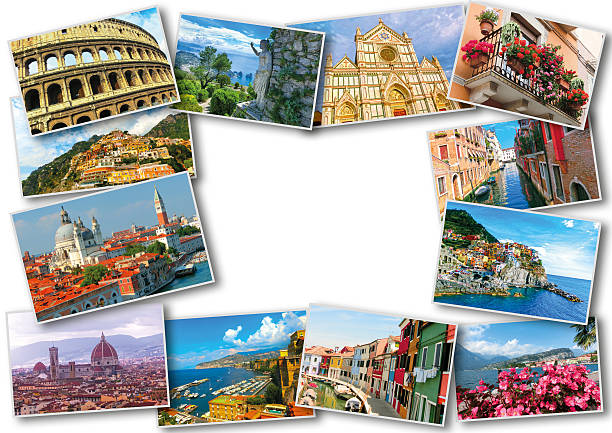

Descubre los destinos más increibles del mundo desde ciudades llenas de historias hasta paraisos naturales que te dejaran sin aliento. ¡Tu proxima aventura te espera!
Italia

Italia es un país con una historia fascinante y una cultura vibrante. Desde la antigua Roma, con sus impresionantes monumentos como el Coliseo y el Foro Romano, hasta las hermosas ciudades de Florencia y Venecia, Italia ofrece una gran variedad de experiencias. Además, su gastronomía es mundialmente conocida, y no puedes irte sin probar una auténtica pizza en Nápoles o un plato de pasta en Roma. Las regiones vinícolas de la Toscana o las Islas de Sicilia y Cerdeña también son destinos perfectos para los viajeros que buscan paisajes espectaculares, historia y buena comida en un solo lugar.
Japón
Japón es una perfecta combinación de lo antiguo y lo moderno. Mientras paseas por Tokio, puedes admirar rascacielos futuristas y centros comerciales gigantes, pero también encontrar templos tradicionales, jardines zen y barrios históricos como Asakusa. Kioto es otro destino imprescindible, famosa por sus templos budistas, el santuario Fushimi Inari y los hermosos jardines. Japón también es un paraíso para los amantes de la naturaleza, con lugares como el Monte Fuji y sus tranquilos parques nacionales. Además, la comida japonesa, como el sushi, ramen y takoyaki, es un verdadero deleite para los sentidos.
España
España tiene una rica diversidad de paisajes, culturas y tradiciones que la convierten en un destino turístico fascinante. Desde las playas soleadas de la Costa Brava hasta la arquitectura impresionante de Gaudí en Barcelona, hay algo para todos. La capital, Madrid, es famosa por su arte y museos, como el Museo del Prado, mientras que Andalucía ofrece un rico patrimonio árabe en lugares como la Alhambra en Granada y la Mezquita de Córdoba. Además, la vibrante vida nocturna y las fiestas, como la famosa Tomatina o los Sanfermines, hacen de España un país lleno de energía y tradición.
Nueva Zelanda
Si eres un amante de la naturaleza, Nueva Zelanda es el lugar perfecto para ti. Con paisajes impresionantes que incluyen montañas cubiertas de nieve, bosques exuberantes, lagos cristalinos y playas vírgenes, este país es un paraíso para los aventureros. El Parque Nacional Fiordland, con sus fiordos como Milford Sound, es uno de los lugares más bellos del mundo.